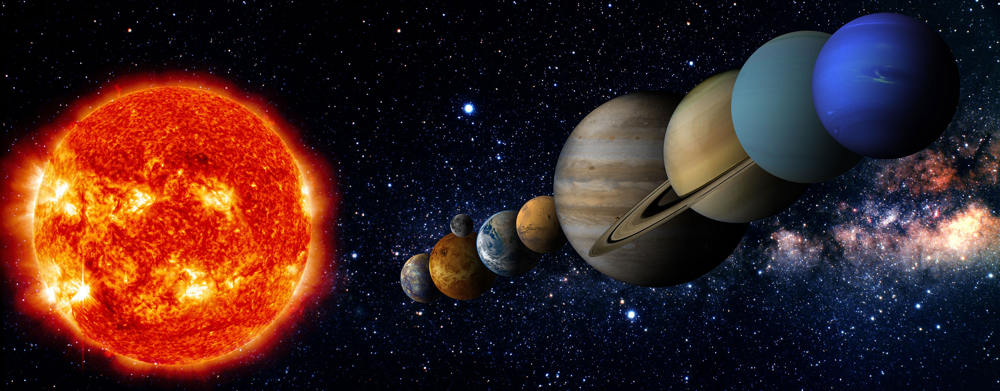

Az Apollo-11 volt az első olyan sikeres küldetés, amely során ember lépett a Holdra 1969. július 20-án. Neil Armstrongék összesen 21 órát és 36 percet töltöttek bolygónk égi kísérőjén

A Naprendszert teljesen betölti a napszél, a csillagunkból kiinduló folyamatos részecskeáramlás, amely kölcsönhatásba lép az égitestekkel, létrehozva az űridőjárást. A napszél egyben ki is jelöli a Naprendszer határait: hatása a heliopauzáig tart, ahol más csillagok szeleinek sugárnyomása kiegyenlíti a napszél sugárnyomását. Ezt a határt tekintjük a Naprendszer határának, bár a rendszer gravitációs határa messzebbre tehető, hisz még a hozzávetőleg egy fényév távolságig terjedő Oort-felhő is ezen a határon belül van.